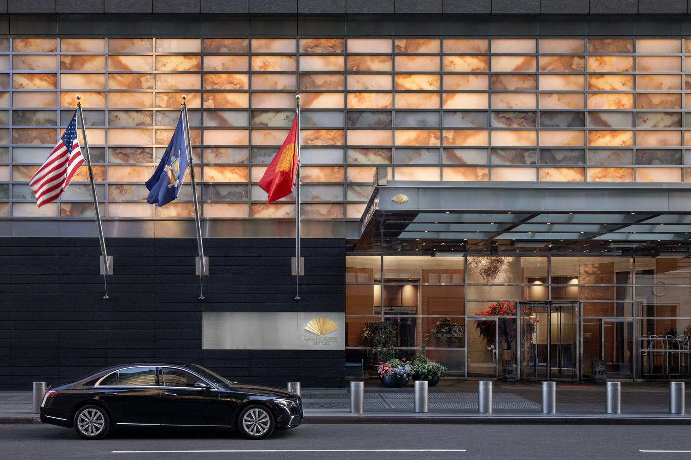
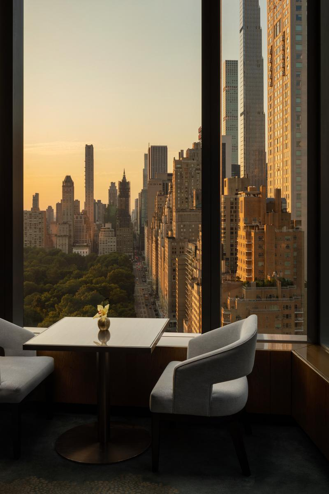
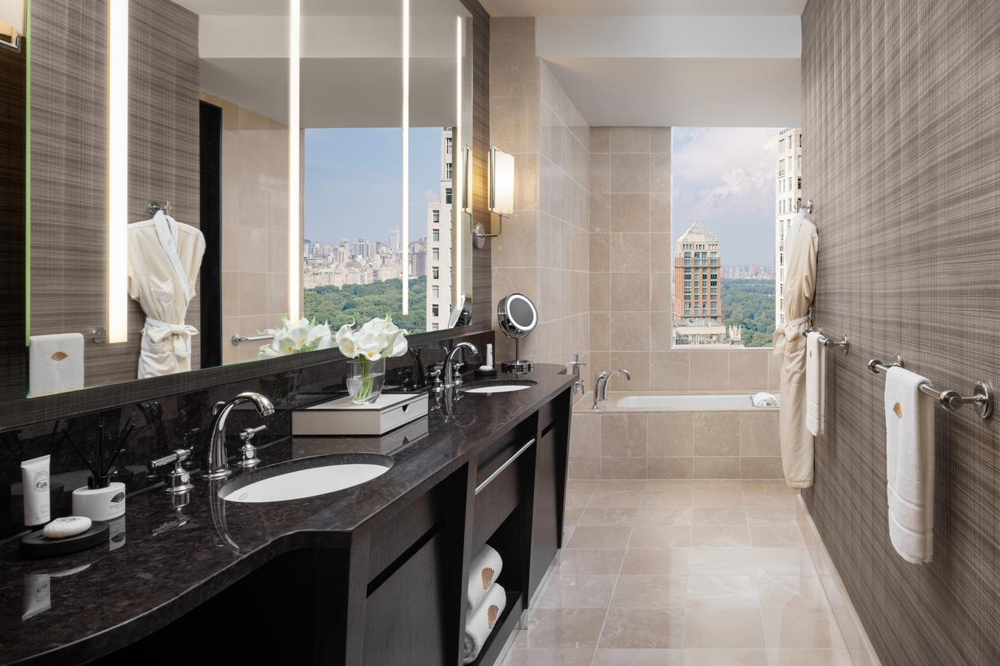
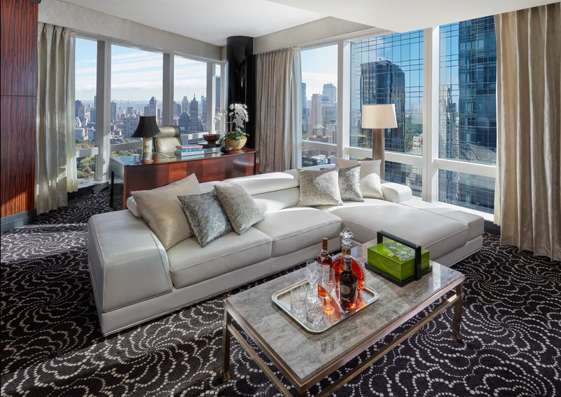
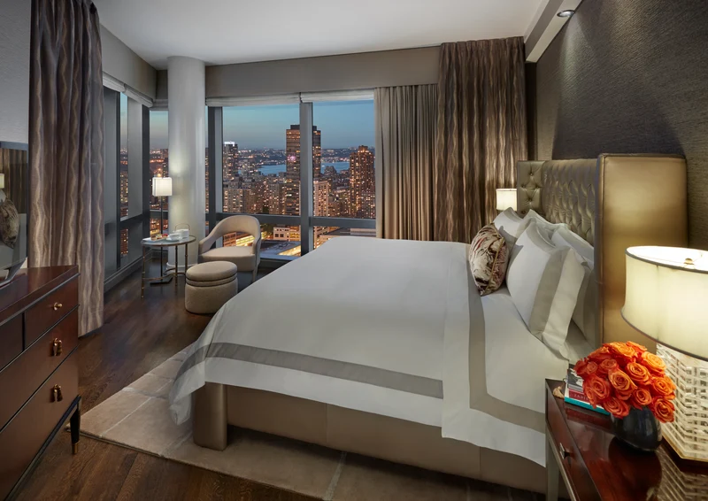
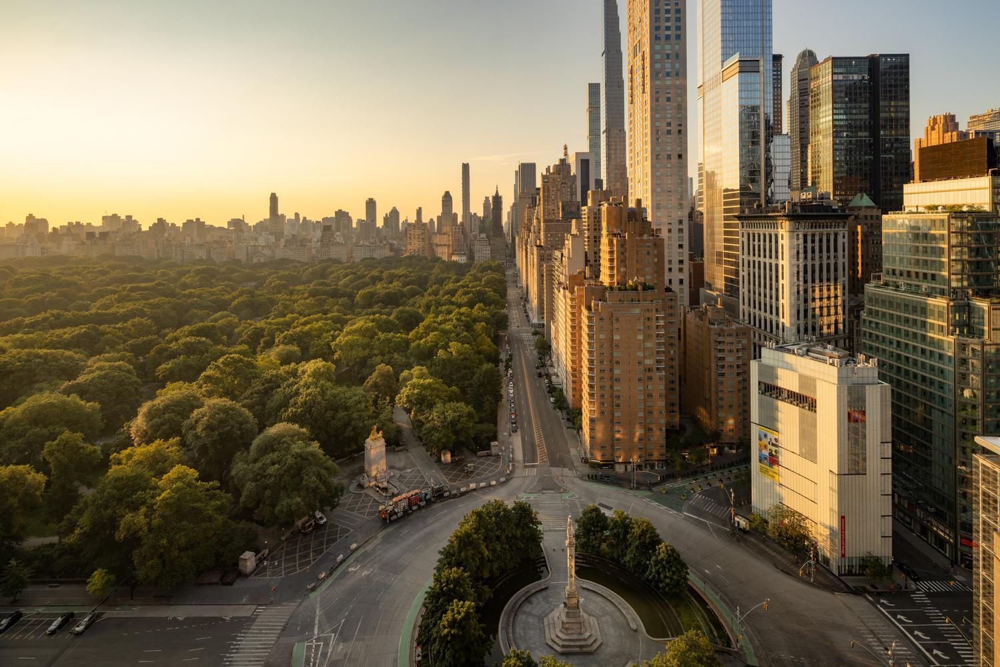
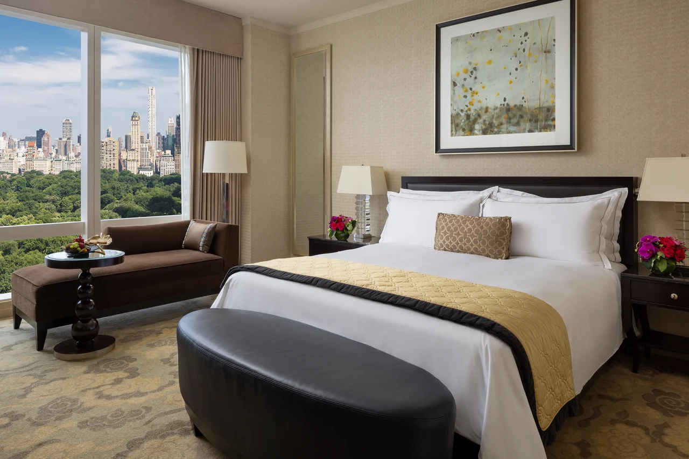

Favorite Hotels
Mandarin Oriental, Columbus Circle is still one of the nicest New York stays if you want views, service, and a little more calm.
I still really like Mandarin Oriental, New York for clients who want Manhattan to feel polished without being too hectic. It sits right at Columbus Circle, but once you get upstairs it feels a lot calmer than that part of the city usually does. If someone wants Central Park access, strong service, and a hotel that actually feels luxurious the second they walk in, this is always one I keep in mind.
What makes it unique
The view is not just nice here. It is one of the reasons to book the hotel.
A lot of New York hotels promise a view. Mandarin is one of the few where the Central Park perspective actually changes the whole mood of the stay. Between the park-facing rooms, the lounge, and the way the hotel sits above Columbus Circle, it gives clients a calmer and more cinematic version of Manhattan.
Best For
Views and calm
Great for clients who want Central Park access and a hotel that immediately feels polished.
Known For
MO Lounge
The lounge really matters here, especially for drinks and lingering over the park view.
Stay
244 rooms and suites
Good range of skyline rooms and larger park-facing suites for longer or more special stays.
Client Type
Polished New York travelers
Couples, first-time luxury NYC travelers, and anyone who wants the city to feel smoother.



The overall setup
Officially, the hotel has 244 rooms and suites spread across 12 floors high above Columbus Circle. What makes it different is that a lot of the rooms already feel more elevated because of the views. Even the more standard skyline-facing rooms do not feel basic when you are looking out over Manhattan.
Room sizes and suite types
On the room side, a Skyline View King is about 398 square feet, while a Premier Central Park View Room is about 420 square feet and gives you those better, higher-floor park views. Once you move into suites, the property gets much more interesting.
- Central Park View Suite: about 818 square feet
- Premier Central Park View Suite: about 800 square feet
- Two Bedroom Hudson River View Suite: about 1,220 square feet
- Oriental Suite: about 2,198 square feet with dining, media, and entertaining space
- New York Skyline Suite: roughly 1,210 square feet on the top floor




The restaurant and bar situation
The big selling point here is definitely MO Lounge. It is the kind of place that makes the whole hotel feel more memorable. The views over Central Park and the skyline are a huge part of it, but it also just has a very good energy. You can do breakfast there, lunch, dinner, cocktails, and afternoon tea, but honestly I especially love it as a bar setting. It is a dope lobby bar overlooking the park and one of the better places in the city to sit down, have a drink, and feel like you picked the right hotel.
Who I think stays here best
- Couples who want a romantic New York trip with real hotel time built in
- International travelers who want a strong first New York experience
- Clients who care more about views and service than being in a trendy downtown scene
- Families or longer stays that want the bigger suite inventory
My honest take
This is not the most fashion-y New York hotel and it is not trying to be. It is for people who want the city to feel a little smoother, a little more elevated, and a lot better handled. If someone wants Upper West Side energy, Central Park right there, and a hotel with actual presence, Mandarin still deserves to be in the conversation.